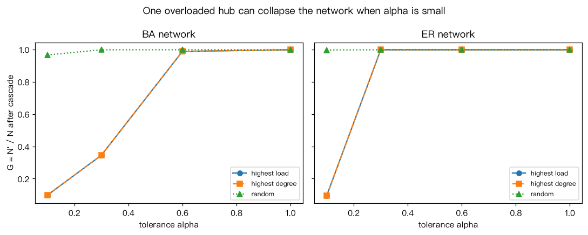

Example04 / 09
Motter–Lai 负载重分配级联
负载 L_i 取节点介数（最短路径条数意义），容量 C_i = (1+alpha) L_i。移除一个初始节点后，重新计算介数， 负载超过容量的节点全部失效，循环直至没有新的失效。用 G = N’/N 度量级联后最大连通分支的相对规模。 比较三种触发方式：移除负载最高的节点、移除度最高的节点、随机移除一个节点。 解读：容忍参数 alpha 较小时，移除一个高负载节点即可引发大面积崩溃，而随机触发几乎无影响； 负载更不均匀的 BA 网络需要更大的 alpha（更多冗余容量）才能避免崩溃。
Output输出图

Output文字输出
BA alpha=0.1 最高负载触发 G=0.10 最高度触发 G=0.10 随机触发 G=0.97 BA alpha=0.3 最高负载触发 G=0.34 最高度触发 G=0.34 随机触发 G=1.00 BA alpha=0.6 最高负载触发 G=0.99 最高度触发 G=0.99 随机触发 G=1.00 BA alpha=1.0 最高负载触发 G=1.00 最高度触发 G=1.00 随机触发 G=1.00 ER alpha=0.1 最高负载触发 G=0.09 最高度触发 G=0.09 随机触发 G=1.00 ER alpha=0.3 最高负载触发 G=1.00 最高度触发 G=1.00 随机触发 G=1.00 ER alpha=0.6 最高负载触发 G=1.00 最高度触发 G=1.00 随机触发 G=1.00 ER alpha=1.0 最高负载触发 G=1.00 最高度触发 G=1.00 随机触发 G=1.00
Code代码
# 负载 L_i 取节点介数（最短路径条数意义），容量 C_i = (1+alpha) L_i。移除一个初始节点后，重新计算介数，
# 负载超过容量的节点全部失效，循环直至没有新的失效。用 G = N'/N 度量级联后最大连通分支的相对规模。
# 比较三种触发方式：移除负载最高的节点、移除度最高的节点、随机移除一个节点。
# 解读：容忍参数 alpha 较小时，移除一个高负载节点即可引发大面积崩溃，而随机触发几乎无影响；
# 负载更不均匀的 BA 网络需要更大的 alpha（更多冗余容量）才能避免崩溃。
import numpy as np
import networkx as nx
def load(G):
return nx.betweenness_centrality(G, normalized=False, endpoints=True)
def motter_lai(G, alpha, trigger):
L0 = load(G); C = {v: (1 + alpha) * L0[v] for v in G}
H = G.copy(); H.remove_node(trigger)
while True:
L = load(H)
failed = [v for v in H if L[v] > C[v] + 1e-9]
if not failed:
break
H.remove_nodes_from(failed)
lcc = max((len(c) for c in nx.connected_components(H)), default=0)
return lcc / G.number_of_nodes()
rng = np.random.default_rng(0)
alphas, res = [0.1, 0.3, 0.6, 1.0], {}
for name, G in [("BA", nx.barabasi_albert_graph(400, 2, seed=1)), ("ER", nx.gnm_random_graph(400, 800, seed=1))]:
G = G.subgraph(max(nx.connected_components(G), key=len)).copy()
L0 = load(G)
top_load = max(L0, key=L0.get); top_deg = max(G.degree, key=lambda x: x[1])[0]
rand = [int(v) for v in rng.choice(list(G.nodes()), 5, replace=False)]
for alpha in alphas:
g_load = motter_lai(G, alpha, top_load); g_deg = motter_lai(G, alpha, top_deg)
g_rand = np.mean([motter_lai(G, alpha, v) for v in rand])
res.setdefault(name, []).append((g_load, g_deg, g_rand))
print("%s alpha=%.1f 最高负载触发 G=%.2f 最高度触发 G=%.2f 随机触发 G=%.2f" % (name, alpha, g_load, g_deg, g_rand))
import matplotlib.pyplot as plt
fig, axes = plt.subplots(1, 2, figsize=(10, 4), sharey=True)
for ax, (name, vals) in zip(axes, res.items()):
vals = np.array(vals)
for j, (lab, mk, ls) in enumerate([("highest load", "o", "-"), ("highest degree", "s", "--"), ("random", "^", ":")]):
ax.plot(alphas, vals[:, j], marker=mk, ls=ls, label=lab)
ax.set_xlabel("tolerance alpha"); ax.set_title(name + " network"); ax.legend(fontsize=8)
axes[0].set_ylabel("G = N' / N after cascade")
fig.suptitle("One overloaded hub can collapse the network when alpha is small")
plt.tight_layout(); plt.show()Run在浏览器中运行
首次加载 Python 环境约需 20–40 秒；可以修改参数后重新运行。